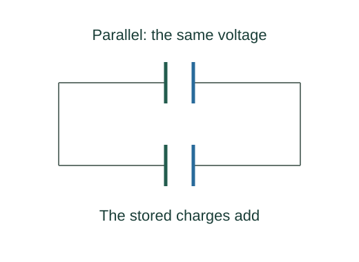

Derive capacitor combinations and dielectric Gauss law
Parallel capacitors share ΔV, while their charges add. Substitute Qi = CiΔV.
What the symbols mean
𝐃 = ε₀𝐄 + 𝐏: electric displacement; 𝐏: polarization; ε = κε₀ for a uniform isotropic linear dielectric.
When this applies
Ideal capacitors, electrostatic lumped network, initially neutral isolated intermediate series nodes; stated linear dielectric relation where used.
Developing the argument

Sum parallel plate charges
Parallel capacitors share ΔV, while their charges add. Substitute Qi = CiΔV.
Sum series voltage differences
Neutral intermediate nodes force equal charge magnitudes Q on ideal series elements. Their voltages Qi/Ci add.
Separate free and bound charge
Polarization creates bound charge density ρbound = −∇·𝐏. Insert it into Gauss’s equation for total charge and collect terms.
Use the constitutive polarization model
For an isotropic linear material 𝐏 = ε₀(κ − 1)𝐄, so 𝐃 = κε₀𝐄. Integrating divergence gives the free-charge flux relation.
A worked example
Two 10 μF capacitors give 20 μF in parallel and 5 μF in series under the ideal-network assumptions.
Derivation behind this calculation ↗A point to keep straight
A spatially varying dielectric cannot in general be replaced by one scalar κ multiplying the entire answer.
Check the assumptions and derivation ↗